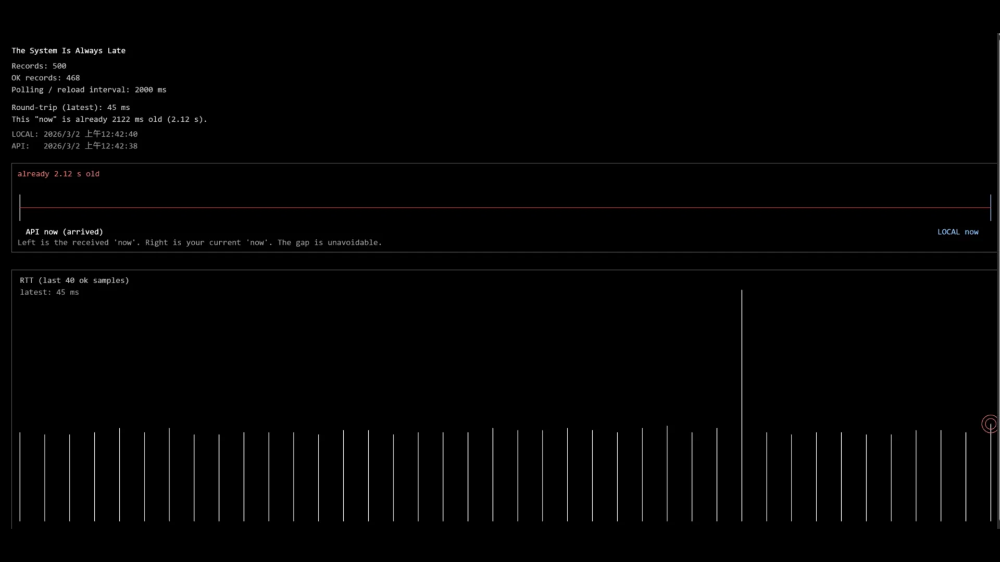

The System
Is Always Late
Left is the received “now”. Right is your current “now”. The gap is unavoidable.
This “now” is already 2122 ms old.
The System Is Always Late compares an API-delivered “now” with the computer's current local time.
By the time the requested time arrives, it has already become old. The interface makes that delay visible as a measurable gap rather than treating it as a technical error to be hidden.
Round-trip time is recorded alongside the two timestamps, turning latency into evidence of an impossible present: the system can report “now”, but it can never deliver it without delay.
The original interface records API responses, local time and round-trip measurements while keeping the temporal gap visible.

Browser · time API · local system time · polling · round-trip time measurement